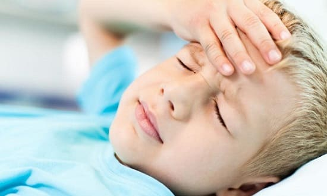
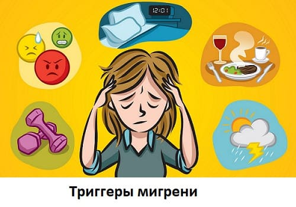
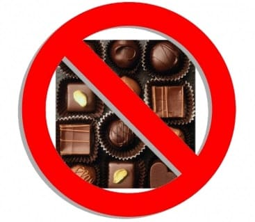
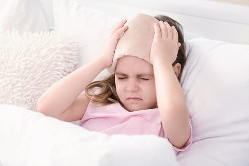

Большинство детей время от времени страдают от головной боли: обычно, когда они болеют ОРЗ или гриппом. Мигрени, которые когда-то считались проблемой только у взрослых, сейчас все чаще и чаще встречаются в младших возрастных группах. Фактически 5% учащихся школ страдают от головных болей. Эта цифра возрастает до 20% у детей 11 — 16 лет и подростков. У девочек данных возрастных групп мигрень встречается чаще, чем у мальчиков. Считается, что причиной этого являются гормональные изменения, через которые проходит девочка в этот период жизни.
СИМПТОМЫ
У детей мигрень может сопровождаться множеством различных симптомов. Самые распространенные:
• пульсирующая боль в одном месте на передней или боковой части головы;
• тошнота и рвота;
• ослабление зрения;
• головокружение;
• усталость и бледный цвет кожи;
• вспышки света, туннельное зрение, волнистые линии перед глазами, чувство онемения кончиков пальцев, обдувания ветром, звона в ушах и т.д.;
• изменение настроения.
СОВЕТ ДОКТОРОВ СИРС: СЕМЕЙНАЯ ИСТОРИЯ При обращении к педиатру по поводу мигрени у ребенка обязательно проинформируйте доктора, если подобные проблемы наблюдаются или наблюдались у родственников. У 70—90% детей, страдающих от головных болей, имеется обширная семейная история мигреней. |
ПРИЧИНЫ И ПОВОДЫ
Считается, что боль при мигрени возникает из-за неравномерного расширения и сужения кровеносных сосудов в мозге. Обычно кровеносные сосуды делают это для регулирования потока крови в различных частях тела. Однако люди с головными болями могут быть более чувствительными к этим изменениям. Некоторые химические вещества в мозге принимают участие в расширении и сужении сосудов. В большинстве случаев у головных болей существует своего рода спусковой механизм — триггер. Известно много различных триггеров для мигреней, включая общебиологические и связанные с окружающей средой и питанием. Вот некоторые из самых частых биологических и внешних спусковых механизмов для мигреней:
• яркие или мерцающие огни;
• громкие звуки;
• стресс;
• депрессия;
• беспокойство;
• изменение нормального режима сна или недостаток сна;
• менструация или гормональные изменения в организме подростка;
• изменение погоды или высоты над уровнем моря;
• сильные или необычные запахи;
• пропуск приема пищи или чувство голода;
• интенсивная тренировка.

Кроме того, существует множество продуктов и пищевых добавок, которые, как известно, могут вызывать приступы мигрени. Среди них:
• обработанное, консервированное или вяленое мясо (ветчина, копченая колбаса, хот-дог, сосиски, пепперони);
• некоторые виды бобовых;
• зрелый сыр, пахта, зерненый творог, сметана;
• лук;
• кофеин;
• аспартам;
• папайя и маракуйя;
• орехи и ореховые масла;
• глутамат натрия;
• соленья и консервированная пища;
• квашеная капуста;
• пересоленная еда;
• шоколад и какао.

ДИАГНОСТИКА
Если вы беспокоитесь, что у вашего ребенка может быть мигрень, обратитесь к врачу. Полная история болезни и обследование для определения характера, спусковых механизмов и продолжительности головных болей могут очень помочь в диагностике мигрени. Фактически многие случаи мигрени могут быть диагностированы, основываясь только на истории заболевания. Лечащий врач вашего ребенка может назначить компьютерную томографию или магнитно-резонансное сканирование мозга, если считает, что причина может быть более серьезной: например, опухоль головного мозга или аномалия строения кровеносных сосудов. Однако у детей эти заболевания обнаруживаются крайне редко, и в большинстве случаев головные боли вызваны мигренью или другими неопасными причинами и не означают ничего более серьезного.
ЛЕЧЕНИЕ
Когда ваш ребенок чувствует, что у него начинается приступ головной боли, отведите его в темное прохладное место. Уложите его, предложите ему закрыть глаза и положите смоченное прохладной водой полотенце ему на лоб. Если ваш врач назначил лекарство от приступов мигрени, лучше всего принимать его при первых признаках головной боли. Детям, у которых мигрень бывает редко, возможно, будет достаточно описанных выше мер и безрецептурного препарата от головной боли (разрешенного детям). Если ребенок часто страдает мигренями или если они усиливаются, ваш врач может назначить лекарство для ежедневного приема, чтобы уменьшить количество приступов.
При умеренных и сильных мигренях он может направить вас к невропатологу. При лечении головных болей ставятся следующие цели:
1. Выявить возможные причины.
2. Уменьшить продолжительность и силу приступов.
3. Сократить частоту приступов мигрени.
СОВЕТ ДОКТОРОВ СИРС: НЕ ДОПУСКАЙТЕ ПЕРЕДОЗИРОВКИ БЕЗРЕЦЕПТУРНЫХ ОБЕЗБОЛИВАЮЩИХ ПРЕПАРАТОВ Если вы заметили, что вам приходится все чаще и чаще давать своему ребенку безрецептурные средства от головной боли, сходите на прием к врачу. Слишком большое доверие к этим препаратам на деле может обернуться еще более частыми головными болями у детей и подростков. Это явление известно под названием рикошетной головной боли. В продаже имеются несколько пищевых добавок, которые, как отмечается, уменьшают частоту головных болей. Сюда относят витамин В12, рибофлавин, витамин РР. Существуют патентованные комбинированные препараты Мигрелиф и Мигренель. Обсудите с врачом эти варианты лечения. |
Альтернативные методы терапии мигреней. Официальная медицина не всегда может найти причину или предложить лечение хронического заболевания. Самые полные и взвешенные обследования и план лечения мигреней иногда не решают проблему. Мы рекомендуем вам искать альтернативные виды лечения, способные облегчить болезнь. Мануальная терапия, акупунктура или натуропатия иногда могут остановить мигрень, с которой общепринятые медицинские методы не справляются.
ПРОФИЛАКТИКА
Хотя, возможно, вам не удастся полностью избавить ребенка от приступов мигрени, существует множество способов, помогающих контролировать их частоту и тяжесть. А именно:
Самый эффективный способ вылечить мигрень — приложить все усилия для выявления спускового механизма приступов.

СОВЕТ ДОКТОРОВ СИРС: ВЕДИТЕ ДНЕВНИК Каждый раз, когда к нам в больницу обращается ребенок с жалобой на головные боли, которые, по нашему мнению, могут быть связаны с мигренями, мы всегда настоятельно советуем вести «дневник головной боли». Это означает ведение ежедневного журнала приемов пищи и деятельности. Особенно важно фиксировать эту информацию в те дни, когда у ребенка была мигрень. Ведение дневника может помочь выявить пищу и/или факторы окружения, которые могут привести к головным болям у вашего ребенка. |
Практически во всех случаях мигрени могут быть найдены по крайней мере несколько провокаторов. Хотя, скорее всего, устранение их не избавит вашего ребенка от головных болей полностью, но может очень сильно улучшить качество жизни в целом. Если мигрени у ребенка ухудшаются или появляются новые симптомы, снова обратитесь к врачу. Возможно, для исключения более серьезных причин понадобится дальнейшее обследование. Чтобы справиться с головными болями, может потребоваться наблюдение у специалиста по головным болям (например, невролога).
Здоровье ребенка от докторов Сирс / Сирс У. и др.